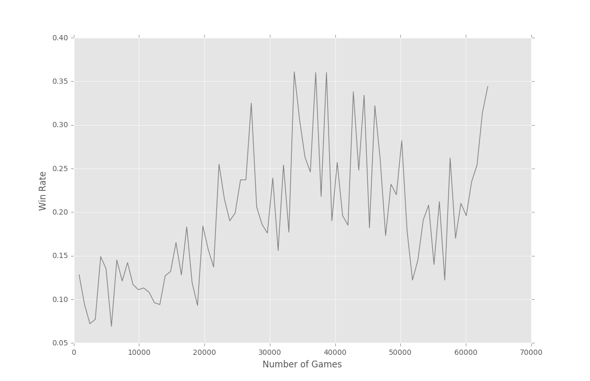
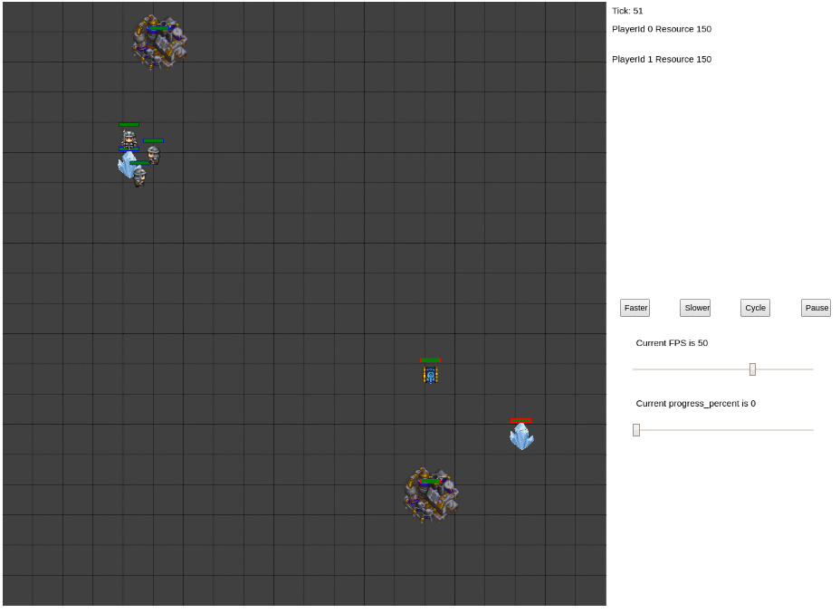

Facebook 在7月6日开源了 ELF(Extensive, Lightweight and Flexible) 平台，ELF 对即时战略游戏模拟做了很多优化，其轻量级的 MiniRTS 模拟环境使开发增强学习算法变得更高效，更多介绍可以参考 GitHub 的 README (Documentation 还在每天更新，目前虽然内容不多，但可持续关注)，另外还有 Facebook 主页介绍 和 arXiv paper 可以阅读。
接下来将从配置环境、用 ELF 自带算法玩 MiniRTS 两个方面展开。
配置环境
由于 ELF 自带的增强学习代码基于只能在 Linux 和 macOS 运行的 PyTorch，所以本文采用 Ubuntu 16.04 LTS + Anaconda3 4.2.0 + PyTorch 的组合。
在配置 ELF 环境的过程中，还有许多细节 (坑) 需要注意：
需要安装编译 C++ 的 Linux 库，比如 gcc(>=4.9)，在 Linux 终端中运行：
1sudo apt-get install gcc需要安装 tbb 库，否则程序会报错，具体见 Issue，在 Linux 终端中运行：
1sudo apt-get install libtbb-dev在可视化游戏界面的时候，需要用于前后端连接的库 zeromq 4.0.4 和 libczmq 3.0.2，因为没有比较细致的安装文档，摸索了比较久，有以下链接值得参考：
- 安装 python-dev 库，对于Python 2 和 Python 3 分别在 Linux 终端输入：12sudo apt-get install python-devsudo apt-get install python3-dev
其他机器配置 ELF 也许会出现不一样的问题，首先看看 ELF 项目的 Issues 中有没有人报告相同问题，然后就是各种 Google。严格按照 ELF README.md 中的步骤和库的版本配置，可以降低报错的概率。
用 ELF 玩 MiniRTS
要用 ELF 玩 MiniRTS，首先需要编译 MiniRTS，即在命令行输入：
生成 minirts.so 供其他 Python 程序调用。注意所有的编译都需要用相同版本的 Python，否则会报错。指定方法例如：
如何开始训练
训练模型的入口位于 run.py, ELF 平台默认的训练方式是基于命令行的，以本文环境为例，用 Actor-Critic 算法开始训练则在命令行输入：
以上指令定义了游戏环境文件 game=./rts/game_MC/game，模型 model=actor_critic 以及模型所在文件 model_file=./rts/game_MC/model。之后含有 -- 的指令则定义了各种参数，比如 --num_games 1024 定义并行运行的游戏数量为 1024；--batchsize 128 定义每批样本大小为 128；--freq_update 50 即训练 agent 的动作输入频率为 50；--fs_opponent 20 即对练的 AI 动作更新频率为 20；相比之下 AI 动作更新更快，这给了 AI 一定的反应优势；--latest_start 500 设定了 agent 开始训练的最晚帧数，随机延迟训练起始帧数是为了使 agent 学习到的开局更多样化，有利于探索各种策略；--latest_start_decay 0.99 则使每局的训练起始帧数随着学习进程逐步下降，原理类似于 ε-greedy 中随机探索概率的逐步下降，兼顾了探索与经验应用；--opponent_type AI_SIMPLE 选择了对手 AI 的类型；--tqdm 则是为了显示训练进度条。除此之外，还有其他训练选项可以定义，具体见对应的 Utils Documentation。
另外，也可以在各种 IDE 中通过运行 run.py 的代码来开始训练模型，这种方法优点在于便于 debug，但缺点是麻烦，需要在代码中修改各种参数的定义，不如命令行直接。
如何继续训练
在上面的训练过程进行时，ELF 会默认在每 5000 次迭代 (iteration) 后保存一次模型参数到 .bin 文件，如果要在之前的 .bin 文件基础上继续学习，则在训练的指令行后设定 --load 参数，比如，如果要基于 save-62544.bin 继续训练，则输入：
将会在终端中看到如下信息：
如何评估模型
评估模型即用训练好的模型与 AI 对抗，并计算打败 AI 的几率，这同样可以在终端中用命令行完成：
eval_only=1 即开启评估模式，--num_eval 100 定义了测试局数为 1000，其他参数与训练时基本一致。但要注意，对于只有 1 个 GPU 的设备，还需要设定评估时的 GPU 个数，即 --eval_gpu 0，因为 ELF 中默认评估模式是多 GPU 设备的。
评估结果显示如下：
即 save-63362.bin 模型对 AI 的胜率大致为 33.6%，如果手动对整个训练过程进行记录，可以得到如下胜率变化图：

可以看出，随着游戏次数增加，胜率有所提高，但图中只训练了77轮 (每轮1024个游戏环境并行执行) ，还需要继续训练达到收敛。
游戏可视化
ELF 自带游戏可视化模块，以 MiniRTS 为例，基于之前生成的 minirts.so，进入 backend 文件夹：
编译完成后生成 minirts 可执行文件，对它施加命令就可以开始可视化了：
打开 ./rts/frontend/minirts.html 就可以看到：

这项功能仍有一些 bug，比如 Pause 键暂停后无法继续游戏等等。
平台缺陷
由于 ELF 开源距今只有 10 天，目前不可避免地有缺陷：
- 源代码中仍然有 bug 需要自己调试或者提交 Issues 给开发者
- 对于自定义算法还没有接口，仍需要到
./rlpytorch/rlmethod_common.py,./rts/game_MC/model.py等源文件中添加新的类修改代码，但 Facebook 团队回复 Issues 说之后会将模型调整为独立的包并完善接口 - 可视化界面目前只能用于人和自带 AI 的对战 (humanplay) 以及自带 AI 之间的对战 (selfplay)，目前没有对于训练模型的可视化，即无法基于
.bin文件可视化游戏 - Documentation 很不健全，还在每天上传完善
总之，ELF 会是高效便捷的强化学习研究环境，但目前处于起步阶段，还需要对各个功能的更新持续关注 :D 。